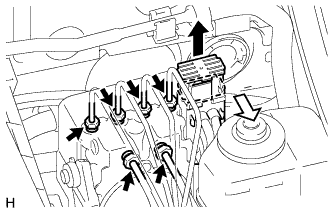
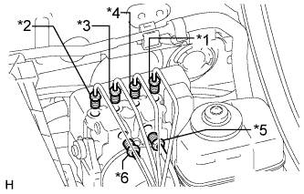
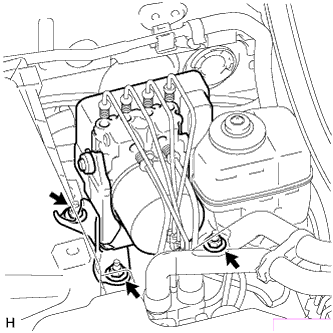
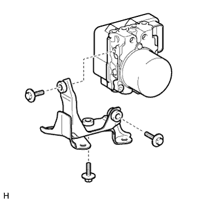
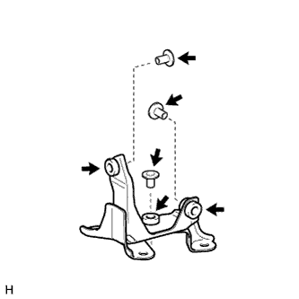

БЛОК УПРАВЛЕНИЯ РАБОЧИМИ ЦИЛИНДРАМИ ТОРМОЗОВ > СНЯТИЕ |
| 1. ОТСОЕДИНИТЕ ПРОВОД ОТ ОТРИЦАТЕЛЬНОГО ВЫВОДА АККУМУЛЯТОРНОЙ БАТАРЕИ |
| 2. СНИМИТЕ КОРПУС ВОЗДУШНОГО ФИЛЬТРА В СБОРЕ (для моделей с 2TR-FE) |
| 3. СНИМИТЕ КОРПУС ВОЗДУШНОГО ФИЛЬТРА В СБОРЕ (для моделей с 5L-E) |
| 4. СНИМИТЕ БЛОК УПРАВЛЕНИЯ РАБОЧИМИ ЦИЛИНДРАМИ ТОРМОЗОВ В СБОРЕ |
|  |
Освободите рычаг блокировки и отсоедините разъем блока управления рабочими цилиндрами тормозов.
С помощью разрезной головки отсоедините 6 трубопроводов тормозной системы от блока управления рабочими цилиндрами тормозов.
|  |
Используйте бирки или метки для идентификации мест установки всех трубопроводов тормозной системы.
|  |
Отверните 3 гайки и снимите блок управления рабочими цилиндрами тормозов с кронштейном с кузова.
| 5. СНИМИТЕ КРОНШТЕЙН БЛОКА УПРАВЛЕНИЯ РАБОЧИМИ ЦИЛИНДРАМИ ТОРМОЗОВ |
|  |
Выверните 3 болта и снимите кронштейн блока управления рабочими цилиндрами тормозов с блока управления рабочими цилиндрами тормозов.
| 6. СНИМИТЕ ВТУЛКУ КОРПУСА БЛОКА УПРАВЛЕНИЯ РАБОЧИМИ ЦИЛИНДРАМИ ТОРМОЗОВ |
|  |
Снимите 3 втулки корпуса блока управления рабочими цилиндрами тормозов с амортизаторов болтов блока управления рабочими цилиндрами тормозов.
| 7. СНИМИТЕ АМОРТИЗАТОР БОЛТА БЛОКА УПРАВЛЕНИЯ РАБОЧИМИ ЦИЛИНДРАМИ ТОРМОЗОВ |
Снимите 3 амортизатора болтов блока управления рабочими цилиндрами тормозов с кронштейна блока управления рабочими цилиндрами тормозов.